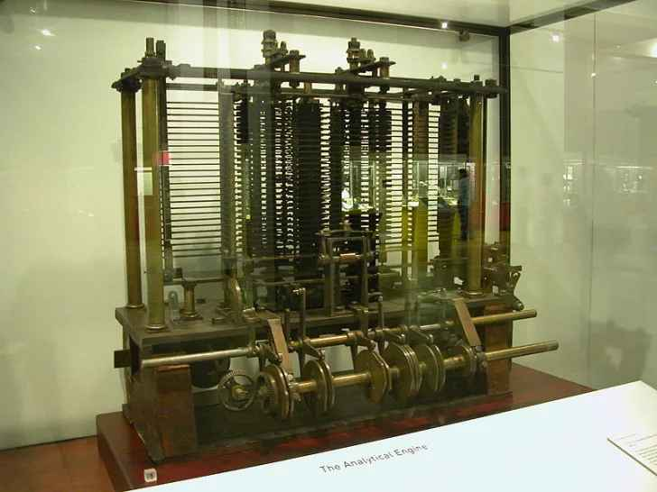
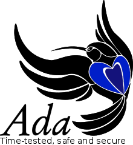

About Me
Hi! I'm Ada, Countess of Lovelace and am an English mathematician and
writer, chiefly known for my work on Charles Babbage's proposed mechanical
general-purpose computer, the Analytical Engine.
I am one of the first to recognize that machines have applications beyond
pure calculation, and to have published the first algorithm intended to be
carried out by such a machine.
In my free time I like to read about scientific developments, mathematics, and
computational mathematics. I also like to take my chances of winning big.
Fun fact! I've been programing for seconds!

Projects
The first computer program

The world's first computer program for computing Bernoulli numbers.
The Analytical Engine

I helped Charles Babbage on topics ranging from math to computation that helped the development of the Analytical
Engine
The Ada programming language

My work inspired the United States Department of Defense to name their new programming language after me.